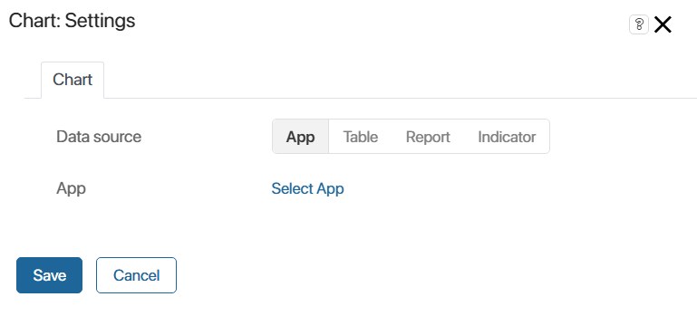
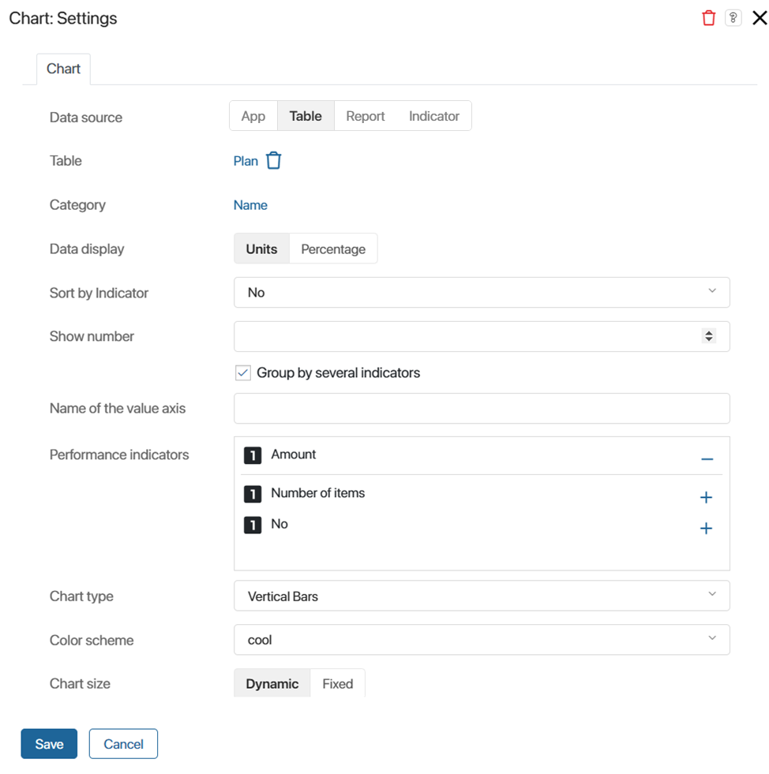
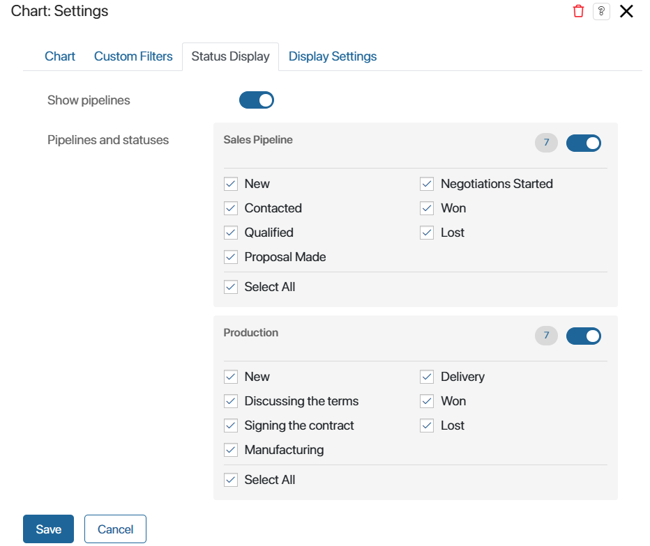
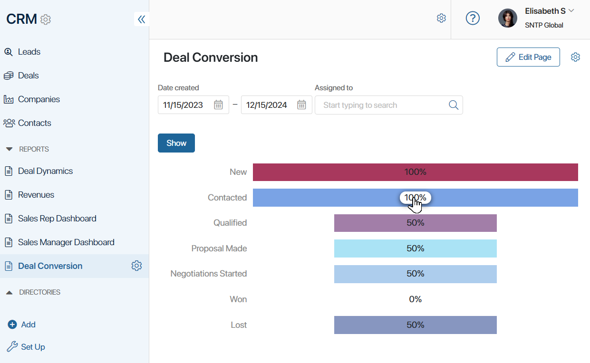
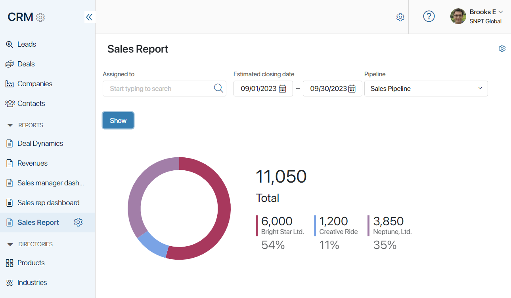
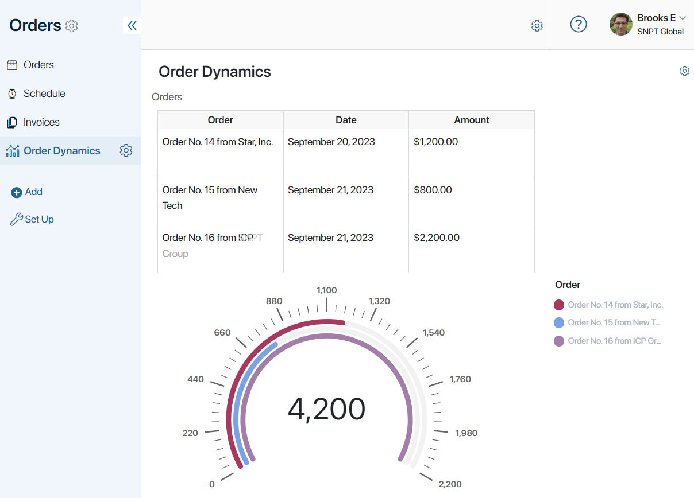
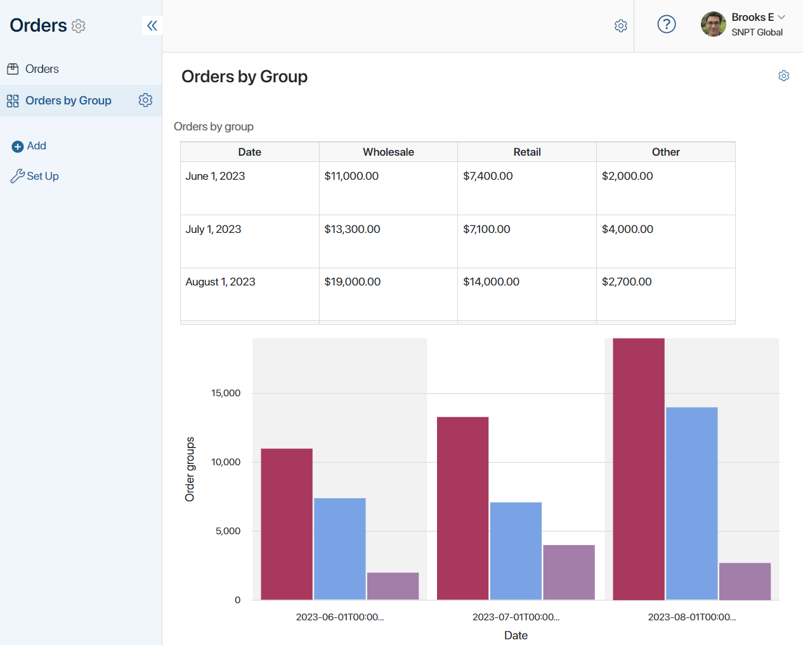
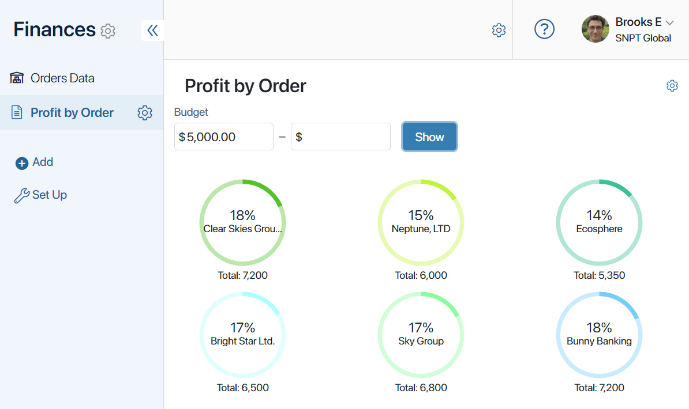
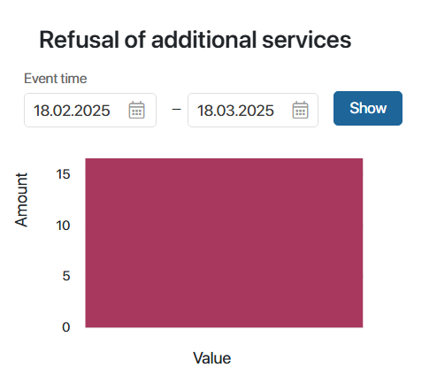

The widget displays data in the form of a chart. You can choose the data source from the following options:
- An app from any workspace.
- A Table type variable created in the context of a page where the chart is placed.
- A Report, a system component that collects information from multiple apps.
- An Indicator component that can help to determine the effectiveness of certain stages of a business process.
For example, with the help of this widget, you can create a line chart showing the annual revenue of the company or a pie chart illustrating the contribution of each manager to the total sales volume.
Create a chart
To configure the widget, open an app form or page in the interface designer. Drag and drop the Chart widget from the right panel onto the modeling canvas or click the +Widget button. The settings window will open.
Chart tab
Specify the chart settings:
- In the Data source field, choose what you want to visualize as a chart:

- App. Select this option to choose any app and build a chart based on its data. Read more about this option in the Data from an app section of this article.
- Table. This option is available when placing the widget on a separate page. Check this option and specify a Table type variable from the page context. The chart will be generated based on data from the table. Read more about this option in the Chart use cases section of this article.
- Report. Enable this option to select a report that aggregates data from multiple apps. Read more about this option in the Chart use cases section of this article.
- Indicator. Enable the option and select a published indicator that is applied in the business process to track data. Read more about this option in the Process indicator data section of this article.
- Specify the chart settings:

- Category. Choose the field for which you want to create the chart. If you specify a Category type property, the chart will be generated based on the options in the property.
Pay attention to the peculiarities of using the App type property as a category parameter:
- Chart source App. If there is a field of the App type on a form, you can specify nested properties of that app as a category parameter but not a link to a specific item. For example, a deal contains an entry of the associated contact. You can select any field from the Contacts app context and build a chart on it.
- Chart source Report. You can use a report column created from a field of the App type as a category parameter. In this case, the name of the associated item will be displayed in the chart. For example, in the report from the order context, the customer company has been added as a column. You can select this column and display the name of the company in the chart.
- Value. Select the field whose value will be used to build the chart. Specify the value Number or a property of the Number or Money type. Depending on the data source, you will have different options for selection: for an app, properties from its context; for a table, its columns, and for a report, the columns in which the data is aggregated.
After selecting the property, specify the parameter for chart construction next to it: field value, sum of values, or minimum, maximum, average value. Please note that if a Date type property is selected in the Value field, you cannot use the Value option for the parameter.
- Additional value (Y-Axis). For line charts, specify an additional value to be displayed on the Y-axis.
- Calculation type. The setting appears if Status is selected as a category and Amount is selected as a value:
- Number of items. The number of items in each status is shown.
- Item conversion, Item conversion (sales). The ratio of the number of items that passed through each status is displayed. Read more about setting up charts on item conversion in the Conversion of leads and deals article.
- Data display. Select how to display values by chart value:
- Units. As a number, such as the number of items or the sum.
- Percentage. As a percentage, for example, as a fraction of the total number of items or total amount.
- Sort by Indicator. By default, the chart uses sorting by the value of a category parameter, for example, by company name or status. You can make the main sorting by value by selecting Ascending or Descending order in the field. Then sorting by category will be used as an additional sort. For example, if you select the name of the deal as a category and its budget as a value, the values will be sorted by the specified amount and additionally by the name.
- Show number. You can limit the amount of displayed data. For example, if sorting by budget is set up, you can use this option to display the top 5 most profitable deals. It also allows you to make the chart more compact if it is not placed on a separate page.
To customize the limit, specify a number in the field that defines how many columns, rows, etc. there will be in the chart, depending on its type. To include data for all items in the chart, leave the field blank.
- Chart type. Choose the chart type:
- Vertical Bars.
- Horizontal Bars.
- Line.
- Area.
- Pie.
- Doughnut.
- Advanced Doughnut.
- Multiple Doughnuts.
- Number Cards.
- Treemap.
- Gauge Chart.
- Drilldown bar chart, vertical.
- Drilldown bar chart, horizontal.
- Pipeline with drill down. It is available only for item conversion charts.
- Table with drill down.
- Color scheme. Select the color scheme for chart visualization.
- Chart size. Choose one of the available options:
- Dynamic. The chart size adjusts according to the volume of displayed data.
- Fixed. Specify the width and height of the chart in pixels.
- When choosing a table as the data source, you can create a chart based on multiple values. To do this, specify additional settings:

- Group by several indicators. This option appears when configuring a Vertical Bars or Horizontal Bars type chart. Check it to specify multiple values that will be displayed on the X-axis.
To see how a vertical bar chart with grouping by multiple values looks, see the Chart use cases section.
Custom Filters tab
If you are customizing a chart based on data from an app or report, you will see the Custom Filters tab. Click it to specify Filter Fields: app properties that will be used as filters for building the chart.
Statuses Display tab
The tab will appear in the widget settings window if an app with configured statuses has been selected as the data source. To have the chart formed only by items with specific statuses, check them on the tab.
For Leads and Deals apps, you can build a chart by the selected pipelines and the statuses configured in them. In this case, each pipeline will be displayed on a separate tab. To do this:
- On the Status Display tab, enable the Show pipelines option.
- Check the pipelines that you want to add to the chart.
- In each pipeline, select the statuses, by the items in which the chart will be generated.

Display Settings tab
You can choose Drilldown bar chart, vertical and Drilldown bar chart, horizontal, Pipeline with drill down, and Table with drill down chart types when selecting Report or App data sources in the widget. Using them, you can view the list of items by which each column in the chart is built.
In the widget settings, on the Display Settings tab, you can select the source properties that will be shown in the item list. By default, only the item name is displayed in the table. To add properties to the list with detailed information, select them on the tab.
To see what a drilldown bar chart will look like, refer to Chart use cases.
Once the chart is configured, click Save. After that, the layout of the chart with data will be displayed on the modeling canvas. If necessary, edit the widget settings to customize the chart.
To make the configured form available to users, click Save and Publish in the top panel of the interface designer.
Chart use cases
Data from an app
Let’s see how to use a chart with the App data source. In the examples, we’ll build reports for the Deals app from the CRM workspace.
Example 1
For the Deals and Leads apps, you can customize the chart to display item conversions by status. This will allow you to track what percentage of deals are closed successfully.
When building a report, you can select the Pipeline with drill down, Drilldown bar chart, vertical, or Drilldown bar chart, horizontal chart type. Then you will be able to see the list of items that have moved to each of the statuses in the chart. To do this, click on the value in any column in the chart.

Read more about setting up such a report in the Conversion of leads and deals article.
Example 2
Create a chart to view the total revenue of the sales department and track the most profitable deals. Here’s how to do it:
- Place the Chart widget on a separate page.
- Choose the Deals app as the data source. In the Category field, specify the deal’s name, and in the Value field, its budget.
- Select the Advanced Doughnut type.
- On the Custom Filters tab, add deal fields by which you want to sort the data on the page, for example, Assigned to, Estimated closing date, and Pipeline.
- Save and publish the page.
The chart will show the company’s total profit, the budget for each deal, and the percentage ratio of this amount to the overall revenue.

Data from a table
To create a chart with the Table data source, follow these steps:
- Create a page and open it in the interface designer.
- Go to the Context tab. Create a property of the Table type. In its settings, add columns.
- Return to the Template tab. On the right panel of the designer, click Properties and drag the created property onto the modeling canvas. This is necessary so that users can populate the table with data on the page.
- Place the Chart widget on the modeling canvas. In the Data source field, select the Table option and specify the name of the created variable from the context. Set the parameters for building the chart, its parameters, its type, color scheme, and size.
- Save and publish the page.
Example 1
The widget can be used to display statistics of completed orders on a separate page.
When users fill in the table columns, in the Gauge Chart, the amount of each completed order is displayed, along with the company’s total revenue.

Example 2
Let’s take a look at how to use the Group by several values option.
On a separate page, add a table that displays the profit from orders on specific dates and a Vertical Bars type chart. The amounts in the table will be distributed across columns depending on the order group: wholesale, retail, or other.
To display the profit from different order groups in separate columns on the chart, enable the Group by several values option in the widget’s settings. Choose properties of the Money type from the table as values.
When users fill the table with data, a chart is generated. In this chart, the amount for each order group is displayed in a separate column. This allows you to compare revenues and assess which group contributes the most to the company’s profit.

Data from a report
Reports aggregate data from multiple source apps. The Chart widget allows you to visualize this data. Read more about reports in the Report section.
In a report, information is presented in the form of a table. The columns of this table can be specified as values for building a chart.
Let’s look at how to create a chart for a report in which Orders, Contracts, and Invoices are selected as source apps. The report contains information about orders, including related contracts and the invoice amount for each contract.
Using the chart, you can track what percentage of the company’s total revenue each order amount accounts for. To do this, select the order name in the Category field and the contract amount in the Value field. Choose the Multiple Doughnuts type. This allows you to view metrics for each order individually.
Save your settings and publish the page. Now, circular charts are displayed on it for each order. They show the order name, the contract amount, and the percentage of the total company profit.

Process indicator data
The indicator allows you to track the efficiency of business process execution. For example, to find out how much time passes between assigning a task and its completion. To fix the value during the process, the Set indicator’s value activity is used on the process chart. You can display the data using the Chart widget.
Let’s assume that a manager offers additional services to clients within a separate task when making a deal. An activity is placed on the process chart after the task to track the number of service refusals using the indicator. You can customize the chart and display how many refusals are received for a certain period during the execution of process instances.
To do this:
- Create a page and place the Chart widget.
- In the settings, select Indicator as the data source.
- In the Category field, specify the indicator property that corresponds to the process step parameter being analyzed. In this example, the variable is called Value.
- In the Chart indicator field, specify the indicator property that contains the values obtained from the process. In this case, it is Amount.
- You can leave the rest of the settings as default.
- On the Custom Filters tab, select filtering by event time to see the number of instances with refused services for the period.
- Save the widget and publish the page.

Found a typo? Select it and press Ctrl+Enter to send us feedback